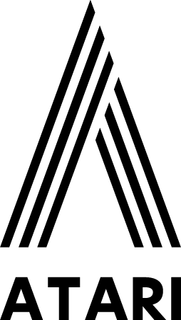
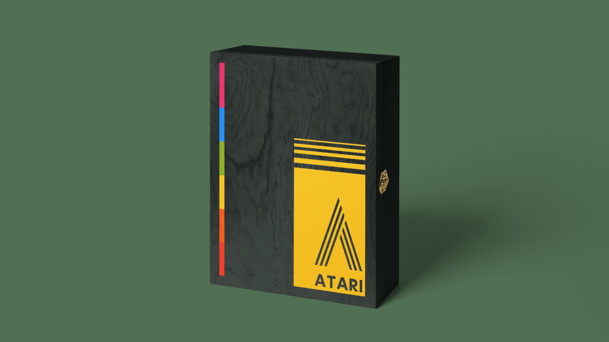
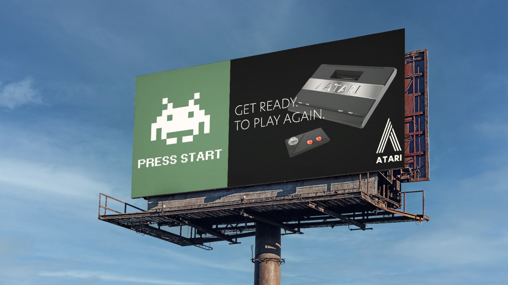
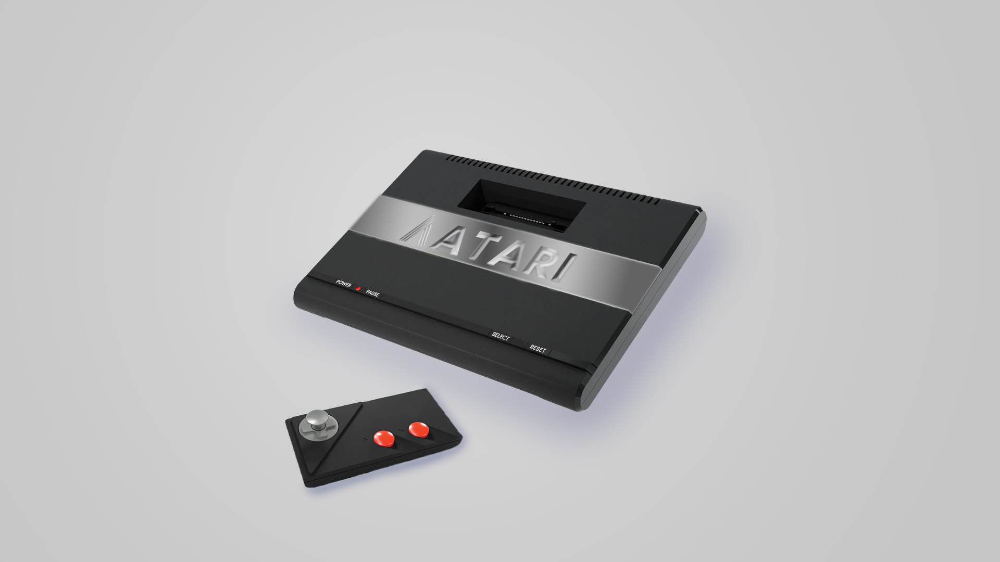
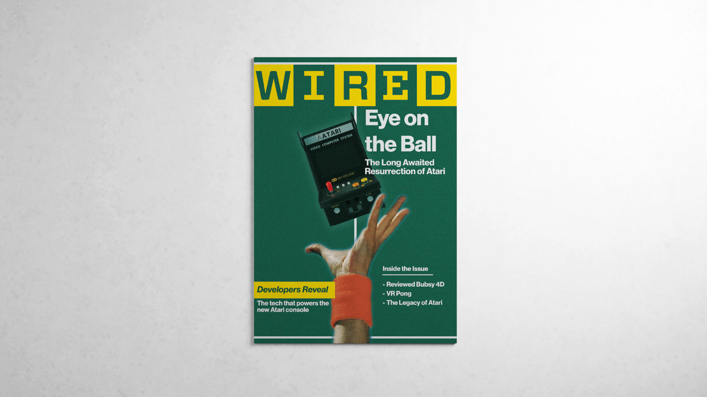

Color Positive Logo
Group Project
Design and brand guidelinesRe-branding Atari, Inc.
Daniel Borg, Logan Dulski, Ryan Liu, Kabir, and Gabriel Sun
03 December 2025 | Version 1
Logo
Atari, Inc.
Color Inverse Logo
Color Positive Logomark

Color Inverse Logomark
Research
Retro memory, contemporary technology
The project began with research into Atari's company history, brand evolution, competitor landscape, user personas, and SWOT position. Atari's legacy is inseparable from early home gaming and arcade culture, from Pong and Asteroids to the Atari 2600.
Rather than rely on literal gaming imagery, the re-branding moves toward a retro-contemporary identity. The new system honors Atari's graphic past while correcting common misconceptions around the original mark and giving the brand a clearer technology-led presence for a modern gaming audience.
Color
Primary Color Palette
Color usage is informed by nostalgic tone, vintage advertising, and restrained contemporary systems.
Dark Green#667C70
Off Black#344140
Off White#F8F6EC
Accent Yellow#FFD735
Accent Pink#EF4C86
Accent Orange#F95E24
Accent Blue#2F97E9
Accent Red#E83A2E
Accent Green#93B823
Muted base colors keep the system mature, while brighter accents recall Atari's rainbow-era visual language without copying it directly.
Typography
Excon
Bold
ABCDEFGHIJKLMNOPQRSTUVWXYZ
abcdefghijklmnopqrstuvwxyz
12345678910
!@%?&
The brand uses a bold sans serif voice to feel structured and technological. Its geometry supports the modified "A" logomark and keeps the identity sharper than a rounded, friendly custom lettering direction.
Applications




Application Logic
From archival recognition to a usable brand system
The applications translate the identity into packaging, print, environmental advertising, and console surfaces. Wood texture recalls the original Atari console, while pixel imagery and arcade references connect the system back to Pong and Space Invaders.
Across these uses, the re-branding keeps the balance between nostalgia and modernization: familiar enough to preserve Atari's memory, but clean enough to function as a contemporary entertainment and technology brand.